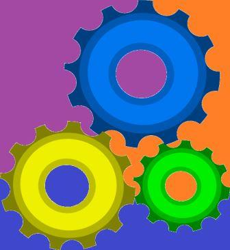

Estimado estudiante bienvenido al Objeto Virtual de Información O.V.I. correspondiente al curso de Gerencia de Proyectos, en el presente O.V.I. encontrará información Relacionada con las diferentes fases que se presentan en el ciclo de vida de los proyectos, tales como aprobación, definición, planificación, ejecución y cierre. Lo animamos a realizar una exploración completa de su contenido con el fin de que se apoye en la información presentada y esta sirva para el desarrollo de las actividades académicas. Estaremos atentos a cualquier inquietud, con el fin de dar respuesta oportuna y adecuada. Muchos éxitos
Lecturas
Estimado estudiante, bienvenido a la sección de lecturas del O.V.I. Gerencia de Proyectos, en esta sección encontrará lecturas sobre conceptos básicos, fases de un proyecto y gestión de riesgos. Estas lecturas presenta información importante para la gestión de proyectos y nos brinda una visión de los diferentes ciclos de vida de los proyectos.
Multimedia
Estimado estudiante, bienvenido a la sección de video ayudas del O.V.I. Gerencia de Proyectos, en esta sección encontrará información importante para la gestión de proyectos y nos brinda una visión de los diferentes ciclos de vida de los proyectos, en formato de video.
Actividades

Estimado estudiante, bienvenido a la sección de Actividades del O.V.I. Gerencia de Proyectos, en esta sección encontrará enlaces a paginas web donde podrá desarrollar las activiades propuestas en el curso.
Autores
Bienvenido a la seccion de Autores del O.V.I. El presente Ovjeto Virtual de Informacion fue creado con la colaboracion de las siguientes intregrantes del curso de Diseño de sitios web- Ingeniería de Sistemas.
Mauricio Esteban Jimenez Código: Email: Skype:
Cristian andres Beltran Código: Email: Skype:
Carlos Meneses Fuertes Código:18103667 Email:carlosmf3@hotmail.com Skype:carlosmf3